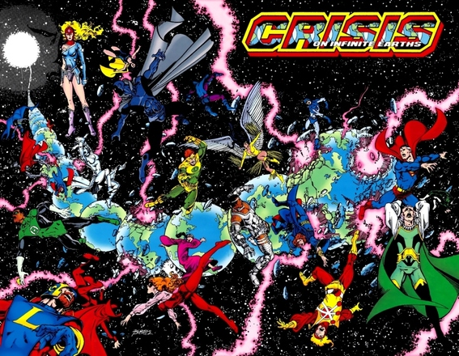

lets talk about crisis!
A Crisis in the DC Universe is an event with potentially great consequences, often involving multiple universes and sometimes even threatening their existence.
There are several crisis have happened in DC universe. All that crisis almost lead destruction of the DC universe. But DC always have it's greatest superheroes to defend the earth from destructive creature.
Crisis may happen constanly in several years. It suppose to take a breath for veteran reader and second wind for newbie. To make it interesting and unforgetable they give bigger lore of dc universe or new villain crisis level or maybe some sacrifice from beloved hero.
Some crisis may reboot DC universe like crisis on infinite earths or flashpoint. Sometimes there were crisis or big event which made to fix another bug appear caused of crisis. That’s will make easy start for new reader but it will seem bad for whole DC universe or DC’s timeline because too much reboot and mixing lore.
Here they are all crisis that already happened to DC universe.